와인(음료)쇼케이스
업소용음료수냉장고 진열, 라벨이 보이게 채우는 순서
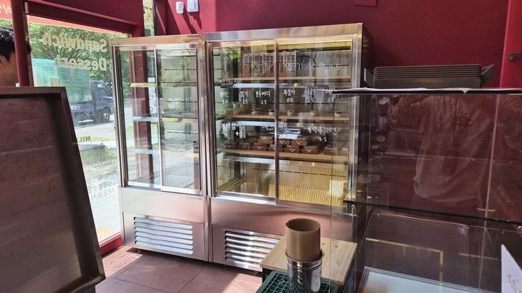
업소용음료수냉장고 진열은 종류별로 세로 칸을 나누고, 가장 많이 팔리는 음료를 손님 눈높이에, 무겁고 큰 병을 아래 칸에 두는 것이 기본입니다. 라벨은 정면을 보게 앞줄을 맞추고 냉기 순환 틈을 남겨야 보기 좋으면서 온도도 지킬 수 있습니다.
안녕하세요. 음료와 주류 냉장 진열장을 매장에 맞춰 만드는 한성쇼케이스입니다.
식당, 펍, 카페, 바틀샵, 무인매장 사장님들께 자주 듣는 말이 있습니다. "냉장은 잘 되는데 상품이 눈에 잘 안 들어와요." 음료는 충분히 갖춰 놨는데 손님은 늘 앞에 보이는 몇 가지만 집어 간다는 거죠.
이건 냉장고 성능 문제가 아니라 진열 문제인 경우가 많습니다. 음료는 병, 캔, 수입 맥주, 수제 맥주까지 라벨과 색이 제각각이라 아무렇게나 채우면 서로 뒤섞여 아무것도 눈에 띄지 않습니다.
오늘은 업소용음료수냉장고를 손님 눈에 잘 들어오도록 채우는 순서와, 진열하면서 온도까지 지키는 방법을 정리해 드리겠습니다.
1. 종류별로 세로 칸을 나누기
가로로 한 단씩 다른 음료를 채우면 손님 시선이 위아래로 계속 오가야 합니다. 탄산음료, 생수, 커피, 맥주처럼 종류별로 세로 칸을 나누면 손님이 원하는 구역을 먼저 찾고 그 안에서 고르게 됩니다.
도어가 여러 개인 냉장고라면 도어 하나를 한 종류로 묶는 방법도 좋습니다. 손님이 찾는 음료가 어느 문 뒤에 있는지 한 번에 알 수 있어 문을 여러 번 열 일이 줄어듭니다.
- 음료 종류별로 세로 구역을 정하세요.
- 도어마다 대표 종류를 정해 두세요.
2. 눈높이에 잘 팔리는 음료
손님 시선이 가장 먼저 닿는 중간 단에는 가장 잘 팔리거나 매장이 밀고 싶은 음료를 둡니다. 맨 위 칸은 작은 캔이나 가벼운 병, 맨 아래 칸은 대용량 페트나 박스 묶음처럼 무거운 상품이 맞습니다.
무거운 병이 위에 있으면 꺼내다 떨어뜨리기 쉽고 선반에도 부담이 갑니다.
수입 맥주나 수제 맥주처럼 라벨 디자인이 화려한 상품은 눈높이 근처에 두면 진열 자체가 매장 분위기를 만들어 줍니다.
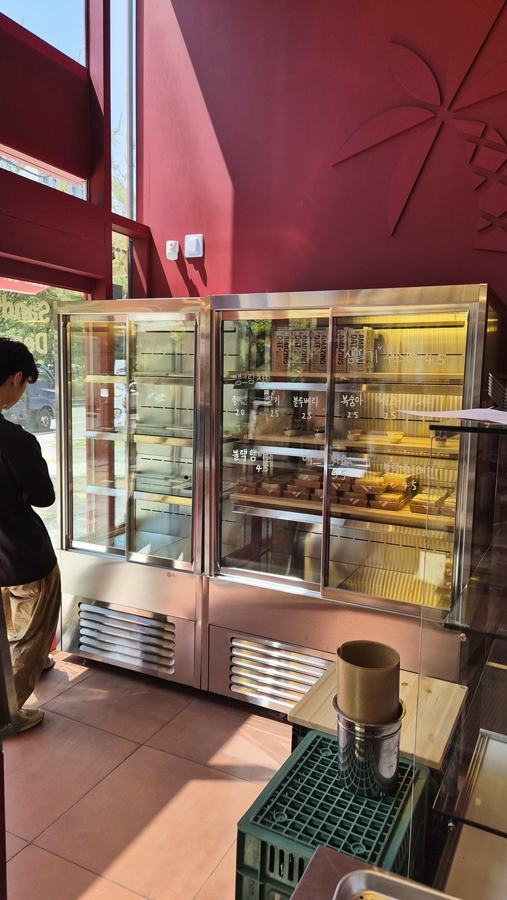
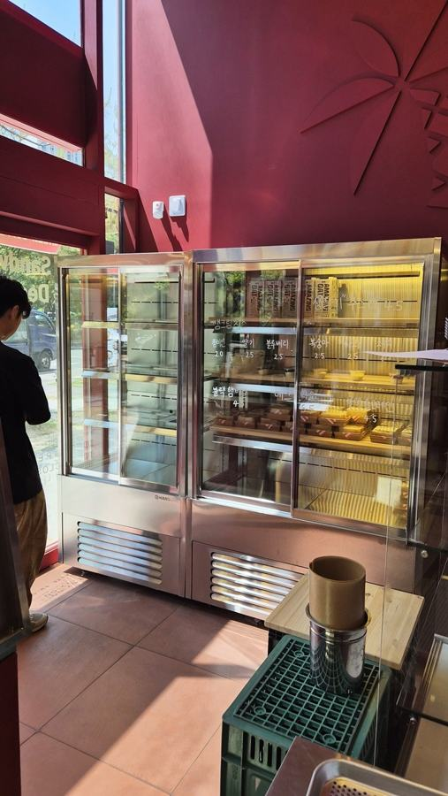
3. 앞줄 정리와 라벨 방향
손님이 음료를 꺼내 가면 앞줄이 비고 뒤쪽 상품은 안 보이게 됩니다. 영업 중 틈틈이 뒤 상품을 앞으로 당기고 라벨이 정면을 보게 돌려 두세요.
같은 상품이 한 줄로 반듯하게 서 있기만 해도 훨씬 정돈돼 보입니다.
새 상품은 뒤에, 먼저 들어온 상품은 앞에 두는 순서도 지켜 주세요. 차가워진 상품이 먼저 나가고, 막 채운 미지근한 상품을 손님이 집는 일이 줄어듭니다.
- 피크 시간 전후로 앞줄을 당겨 두세요.
- 새 상품은 뒤에서부터 채우세요.
4. 냉기 길을 막지 않는 진열
진열을 빽빽하게 하면 보기에는 풍성하지만 냉기가 돌 길이 막혀 일부 칸만 미지근해집니다. 뒷벽과 상품 사이, 선반 위아래에 바람이 지나갈 틈을 남기고 냉기 나오는 구멍 앞을 상품으로 막지 마세요.
막 들어온 상온 음료를 한꺼번에 많이 넣으면 내부 온도가 한동안 올라갑니다. 손님이 몰리기 전 시간에 채우고, 미리 차갑게 해 둔 재고가 있다면 그것부터 앞줄로 보내세요.
5. 조명과 프레임 색
내부가 어두우면 좋은 상품을 갖춰도 매력적으로 보이지 않습니다. 선반마다 빛이 고르게 닿는지 확인하고, 매장 분위기에 맞춰 프레임 색을 고르세요.
우드톤 매장에 차가운 느낌의 장비가 들어가면 따로 놀아 보이고, 블랙 프레임에 은은한 내부 조명을 쓰면 라벨이 더 정돈돼 보입니다.
체크리스트
- 음료 종류별 세로 구역 나누기
- 눈높이에 주력 음료, 아래 칸에 무거운 상품
- 앞줄 당기기와 라벨 정면 맞추기
- 냉기 순환 틈과 토출구 확보
- 선반별 조명과 프레임 색
현장에서 자주 보는 경우: 냉장은 잘 되는데 상품이 눈에 안 들어올 때
식당, 펍, 바틀샵, 무인매장 상담에서 "제품은 많은데 눈에 잘 안 들어온다", "냉장은 잘 되는데 매장 분위기와 안 맞는다"는 말씀을 자주 듣습니다.
살펴보면 내부가 어둡거나 선반 간격이 상품과 맞지 않거나 제품이 뒤섞여 보이는 경우가 대부분이었습니다.
그래서 홀에 노출되는 매장, 인테리어 콘셉트가 뚜렷한 매장, 벽면 폭이나 높이가 애매한 매장, 맥주 종류가 많은 매장에는 맞춤 제작을 권해 드렸습니다.
매장 사진과 설치 공간, 원하는 색상과 용도를 먼저 받아 선반 간격과 조명, 프레임 색을 정하는 방식으로 진행했습니다.
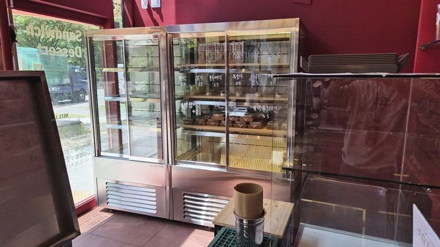
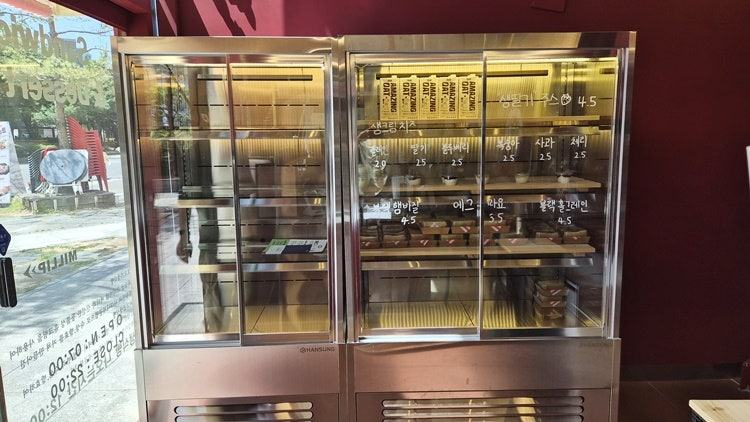
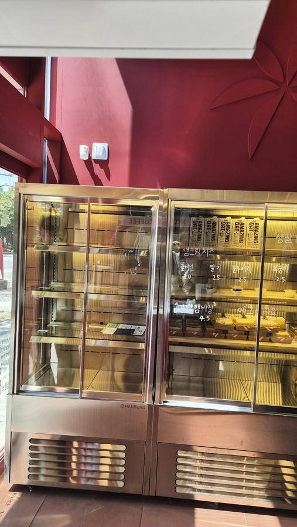
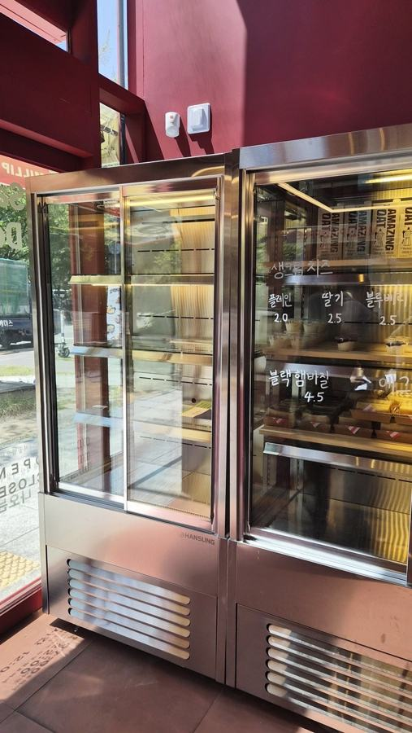
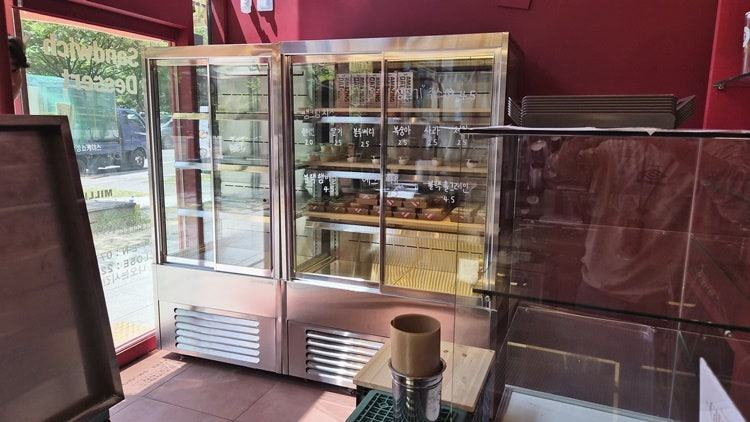
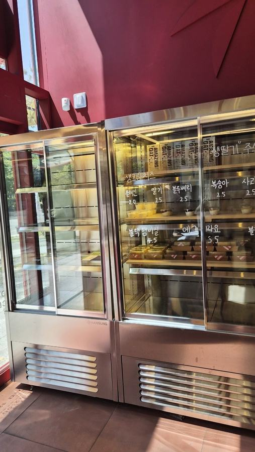
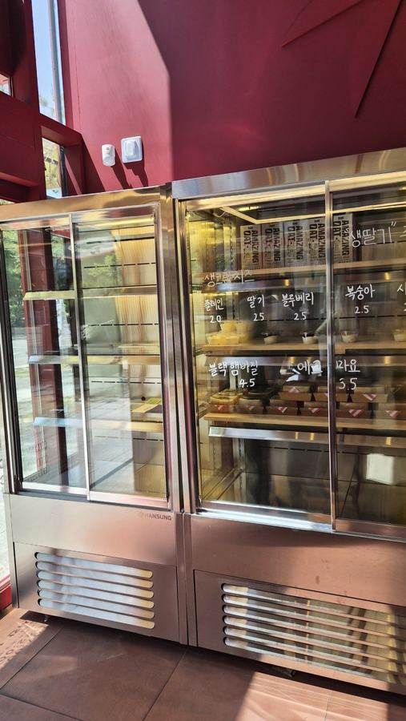
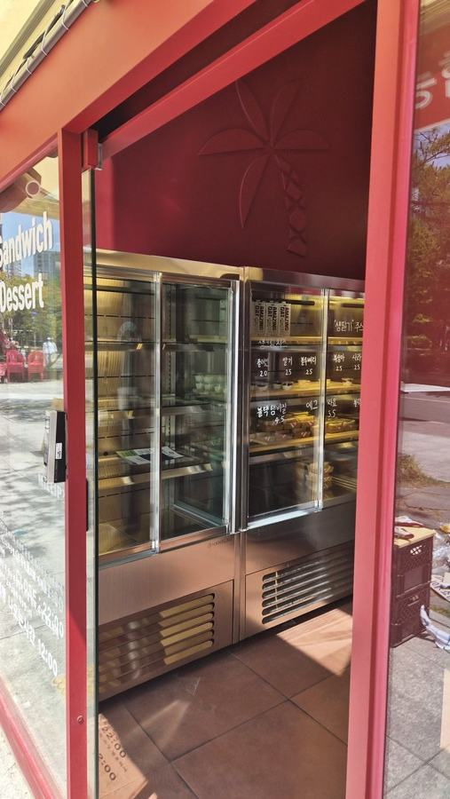
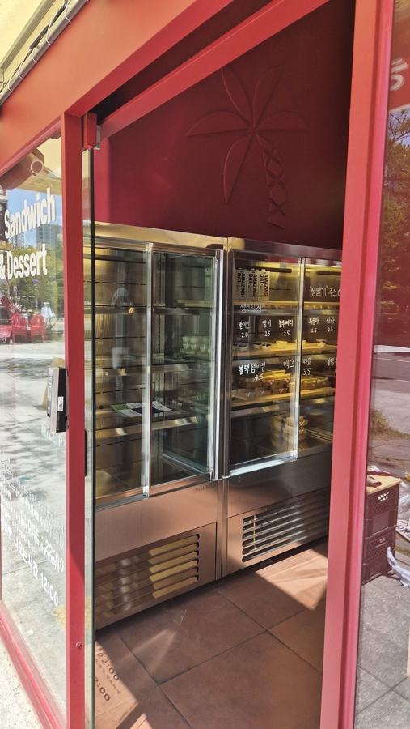
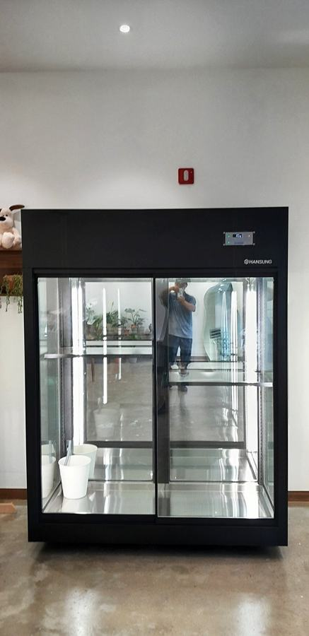
자주 묻는 질문
음료 냉장고는 꽉 채우는 게 좋은가요?
보기에는 풍성하지만 냉기 순환이 막혀 일부 칸이 미지근해질 수 있습니다. 바람길을 남기고 앞줄을 자주 당겨 주는 편이 보기에도, 온도에도 좋습니다.
병 크기에 맞춰 선반 간격을 바꿀 수 있나요?
제품에 따라 선반 높이 조절이 가능하고, 맞춤 제작이라면 주력 상품 높이에 맞춰 간격을 정해 드립니다.
진열할 병과 캔 종류를 알려 주세요.
설치 후 냉장고 문제는 어디서 봐 주나요?
한성쇼케이스는 전국 240여 개 A/S 센터를 운영하고 있습니다. 대표전화 031-986-2458로 접수하시면 됩니다.
매장 조건에 맞춰 만드는 한성쇼케이스
원하시는 제품 사진과 설치할 공간 사진만 보내 주셔도 매장에 맞는 구성을 추천해 드립니다.
- 전국 240여 개 A/S 전담 센터 운영
- 본사 대량 자재 매입으로 품질 대비 합리적인 가격
- 유럽제·삼성 냉각 콤프레셔 적용
- 국내 최초 쇼케이스 전문 디자이너 상주
매장 폭과 원하는 진열 구성을 알려 주세요. 실측과 견적을 안내해 드립니다.
031-986-2458